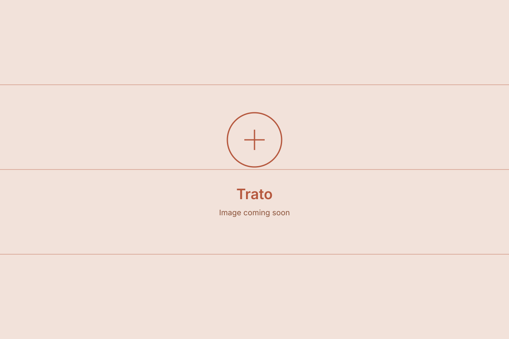

Cadenciamento thesis validation research
Industry
Logistics, Freight Tech
Role
UX Designer — Research Lead
Period
Aug – Sep 2025

As UX Designer leading this research, I ran a mixed-methods study with 98 TAC drivers and 7 carriers to test the trust and value perception of Trato's Cadenciamento product. The result: carriers rated the service 9.5/10, with an NPS of 83, but only 40% of drivers perceived a financial benefit and 94% of their comments were negative or neutral — confirming the issue was a communication and transparency gap, not the product itself, and leading to recommendations across communication, product, and pricing.
The challenge
Cadenciamento existed and adoption was growing, but some autonomous drivers (TAC) distrusted the service, believing the system deliberately delayed scheduling slots to force the purchase of early-access upgrades. Before making any product changes, the team needed to understand whether this negative perception was real, what was causing it, and how to address it.
The result
I led a mixed-methods study with 98 TAC drivers (chatbot survey) and 7 carriers (remote interviews). The findings revealed a critical asymmetry: while 100% of carriers recognized a direct financial benefit and gave an average rating of 9.5/10, only 40% of drivers perceived any gain, and 94% of comments were negative or neutral. The study confirmed the problem wasn't the product itself, but a serious failure in communication and transparency. Recommendations covered communication, product, and pricing.
Context
Trato is a road freight logistics management platform connecting drivers, carriers, and shippers. One of its core features is Cadenciamento, an intelligent scheduling service for terminal unloading slots that emerged from a real problem: in 2022, internal research found that drivers waited an average of 24 hours near terminals before their scheduled time. For a truck driver, downtime is lost money.
The proposed solution was Cadenciamento Premium: letting drivers who arrive earlier pay to move up their slot, taking an opening created by a delay or cancellation. This gave drivers an earlier unloading slot, reducing idle time and increasing the number of trips they could make per month.
The value proposition seemed clear, but internal evaluation data told a different story: some drivers believed the system deliberately delayed schedules to force the purchase of early slots. There was significant distrust, which could become a serious problem.
The problem
Although adoption numbers were growing, user perception was fragmented. Carriers saw the service as essential. Autonomous drivers (TAC) told a different story: unfair charges, a manipulated system, lack of transparency.
Before making any product changes, we needed to understand whether this negative perception was a communication problem, a design problem, a pricing problem, or something more structural. We decided to go directly to users for answers.
My role
I led the research from planning to final analysis, including:
- Defining research objectives and questions
- Designing the mixed methodology (quantitative + qualitative)
- Writing the chatbot survey sent to TAC drivers
- Creating the interview script for carriers
- Conducting remote interviews (7 carriers, via Teams)
- Analyzing quantitative data and categorizing open-ended responses
- Synthesizing findings, generating insights, and building recommendations
- Presenting results to the product team and stakeholders
Defining what we wanted to learn
The research was designed to answer four core questions:
- Is the service perceived as financially advantageous?
- What is the overall perception of Cadenciamento?
- What would happen if the service were discontinued?
- What drives a user to pay (or not) for early access?
Quantitative research with TAC drivers
We sent a 5-question survey via WhatsApp chatbot to 772 drivers who had made more than 5 early-access purchases between January and June 2025. The criterion ensured respondents had real experience with the service. We received 98 valid responses — a reasonable rate for this audience, which tends to have low engagement with formal surveys.
The questions covered perceived financial return, overall rating, impact of discontinuation, decision factors, and an open question about how the service could improve.
Qualitative research with carriers
To deepen the quantitative data, I conducted structured interviews with focal points from 7 carriers of different sizes, between July and August 2025. Conversations were held remotely via Teams, averaging 20 minutes.
The script was built to understand perceived value, service rating, impact of its absence, and decision criteria — mirroring the dimensions used with TAC drivers, to allow direct comparison between the two audiences.
TAC drivers: the product works, but trust is broken
The data revealed an undeniable divergence: while 40% of drivers perceive a financial benefit from the service, 39% say it doesn't help, and 32% would end the service if they could. The predominant sentiment in open-ended responses was negative or neutral in 94% of comments.
The main themes were price (mentioned in 43 responses), scheduling (23), and a perception of unfairness in the process (9). Many believed slots were deliberately scarce to force the purchase of early access — a perception that didn't match the system's actual logic, but revealed a serious failure in communication and transparency.
Carriers: the service is essential
The contrast was stark. All interviewed carriers recognized a direct financial benefit. The average rating was 9.5/10, with an NPS of 83. Six of the seven said they couldn't maintain the same level of operational efficiency without the service.
For this audience, early access isn't just an extra cost — it's an investment. The decision to pay is strategic, based on guaranteed future cargo, client urgency, and freight value. The platform was praised for its ease of use, even among drivers with limited digital familiarity.
The core asymmetry
The hypothesis we tested was: TAC drivers perceive increased profit from Cadenciamento. The answer was: partially. The benefit exists, and carriers prove it with concrete operational data. But for autonomous drivers, communication about how the system works is poor, and the result is distrust — which erodes adoption.
Results & learnings
The research produced recommendations across three fronts:
- Communication — develop an education program for drivers about how quotas work, using accessible language and in-app presence
- Product — implement greater transparency around slot availability and create a differentiated interface with contextual explanations for the TAC audience
- Pricing — review the strategy for autonomous drivers and consider a differentiated model by user profile
Beyond the deliverables, I walked away with a few important learnings:
- A product can work well operationally and still fail in user perception — these are different layers that need to be addressed in parallel
- Research with users who have low digital familiarity requires adapted channels and formats; the chatbot was the right choice for TAC drivers
- Having two audiences with radically different perceptions of the same product signals that communication strategy needs to be segmented — there's no single message that works for everyone
This case study is protected
Enter the password to read the full case study.